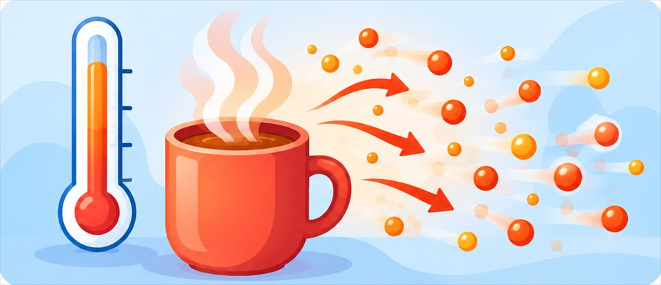
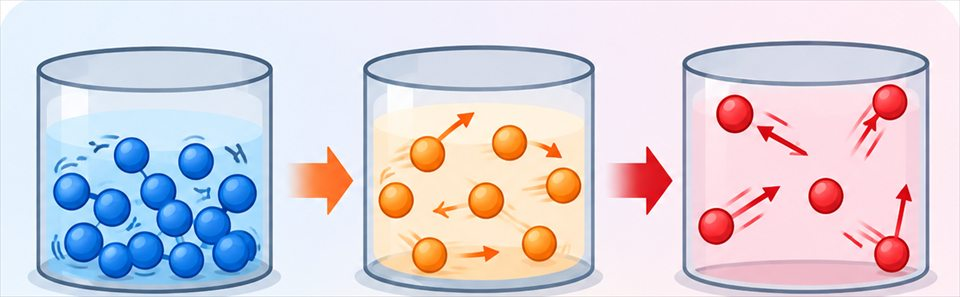
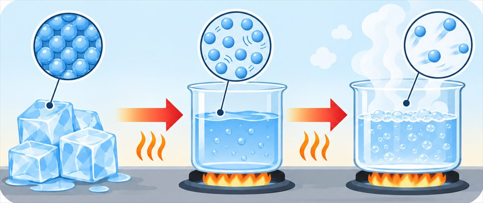

The big idea driving this unit
Heat is thermal energy moving from warmer to cooler objects, while temperature measures how fast particles move on average. Adding or removing energy changes that motion and can change a substance's state, and engineers use insulators and melting ice to keep coolers cold.
Chapters in this unit
-
1

Energy Transfer and TemperatureA metal doorknob and a wooden door in the same room are the same temperature, so why does the doorknob feel colder, and how is heat different from temperature?MS-PS3-3MS-PS3-4MS-ETS1-1MS-ETS1-4 -
2

Changes in Energy at the Molecular LevelWhen the liquid in a thermometer climbs up its narrow glass tube, what is happening to the liquid's particles, and what is the thermometer really measuring?MS-PS1-4MS-PS3-4 -
3

Phase Changes and Energy TransferWhile an ice cube melts, its temperature stays at exactly 0°C the entire time, so where is all the thermal energy it absorbs actually going?MS-PS1-4MS-PS3-3MS-PS3-4